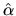
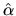
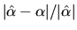
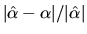
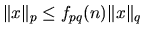
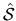
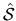
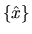
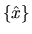

The relative error
 in the approximation

of the true solution
in the approximation

of the true solution  has a drawback: it often cannot
be computed directly, because it depends on the unknown quantity
.
However, we can often instead estimate
,
since
is
known (it is the output of our algorithm). Fortunately, these two
quantities are necessarily close together, provided either one is small,
which is the only time they provide a useful bound anyway. For example,
implies
has a drawback: it often cannot
be computed directly, because it depends on the unknown quantity
.
However, we can often instead estimate
,
since
is
known (it is the output of our algorithm). Fortunately, these two
quantities are necessarily close together, provided either one is small,
which is the only time they provide a useful bound anyway. For example,
implies
Table 4.2 contains a variety of norms we will use to measure errors. These norms have the properties that , and , where p is one of 1, 2, , and F. These properties are useful for deriving error bounds.
An error bound that uses a given norm may be changed into an error bound that uses another norm. This is accomplished by multiplying the first error bound by an appropriate function of the problem dimension. Table 4.3 gives the factors fpq(n) such that , where n is the dimension of x.
Table 4.4 gives the factors fpq(m,n) such that , where A is m-by-n.
The two-norm of A, |A|2, is also called the spectral norm of A, and is equal to the largest singular value of A. We shall also need to refer to the smallest singular value of A; its value can be defined in a similar way to the definition of the two-norm in Table 4.2, namely as when A has at least as many rows as columns, and defined as when A has more columns than rows. The two-norm, Frobenius norm, and singular values of a matrix do not change if the matrix is multiplied by a real orthogonal (or complex unitary) matrix.
Now we define subspaces spanned by more than one vector,
and angles between subspaces.
Given a set of k
n-dimensional vectors
,
they determine
a subspace  consisting of all their possible linear combinations
,
consisting of all their possible linear combinations
,
 scalars }. We also
say that
spans
scalars }. We also
say that
spans  .
The difficulty in measuring the difference between subspaces is that
the sets of vectors spanning them are not unique.
For example,
.
The difficulty in measuring the difference between subspaces is that
the sets of vectors spanning them are not unique.
For example,  ,
and
all determine the
same subspace.
This means we cannot simply compare the subspaces spanned by
and
by
comparing each
,
and
all determine the
same subspace.
This means we cannot simply compare the subspaces spanned by
and
by
comparing each  to xi. Instead, we will measure the angle
between the subspaces, which is independent of the spanning set
of vectors. Suppose subspace 
is spanned by
and that subspace
to xi. Instead, we will measure the angle
between the subspaces, which is independent of the spanning set
of vectors. Suppose subspace 
is spanned by
and that subspace  is spanned by
.
If k=1, we instead write more
simply 
and
is spanned by
.
If k=1, we instead write more
simply 
and  .
When k=1, we defined
the angle
.
When k=1, we defined
the angle
 between
and
between
and  as the acute angle
between
as the acute angle
between  and x.
When k>1, we define the acute angle between
and
and x.
When k>1, we define the acute angle between
and
 as the largest acute angle between any vector
as the largest acute angle between any vector  in
,
and the closest vector x in
in
,
and the closest vector x in  to
to  :
:
As stated above, all our bounds will contain a factor p(n) (or p(m,n)), which measure how roundoff errors can grow as a function of matrix dimension n (or m and m). In practice, the true error usually grows just linearly with n, but we can generally only prove much weaker bounds of the form p(n)=O(n3). This is because we can not rule out the extremely unlikely possibility of rounding errors all adding together instead of canceling on average. Using p(n) = O(n3) would give very pessimistic and unrealistic bounds, especially for large n, so we content ourselves with describing p(n) as a ``modestly growing'' polynomial function of n. Using p(n)=10n in the error bound formulas will often give a reasonable bound. For detailed derivations of various p(n), see [55,67,103].
There is also one situation where p(n) can grow as large as 2n-1: Gaussian elimination. This typically occurs only on specially constructed matrices presented in numerical analysis courses [103, p. 212][67]. However, the expert drivers for solving linear systems, xGESVX and xGBSVX, provide error bounds incorporating p(n), and so this rare possibility can be detected.